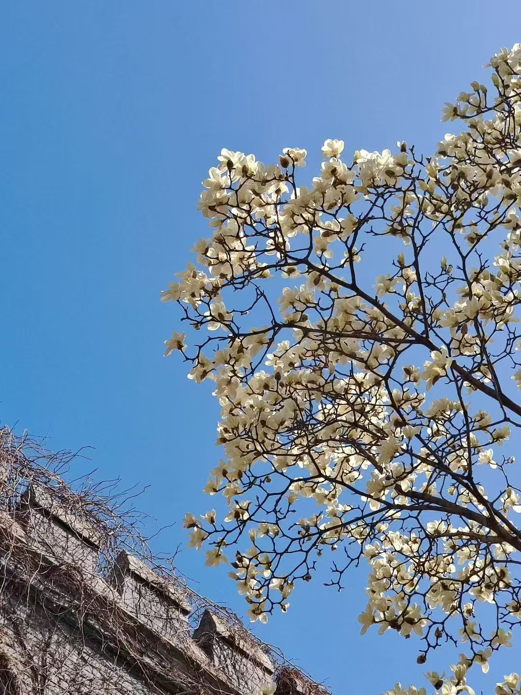
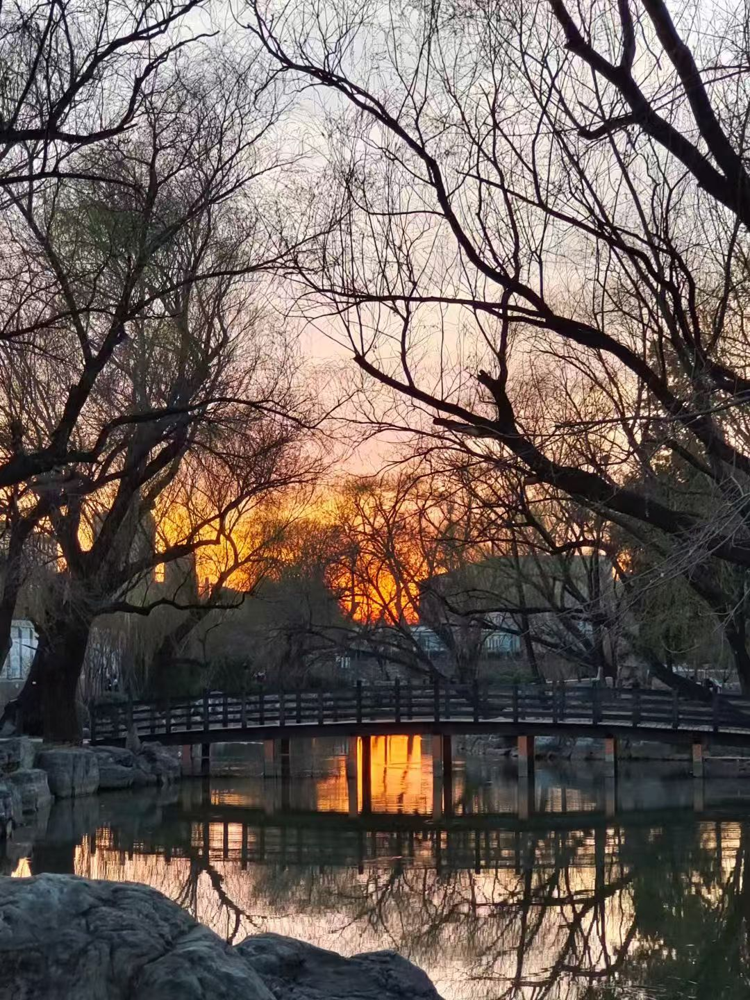
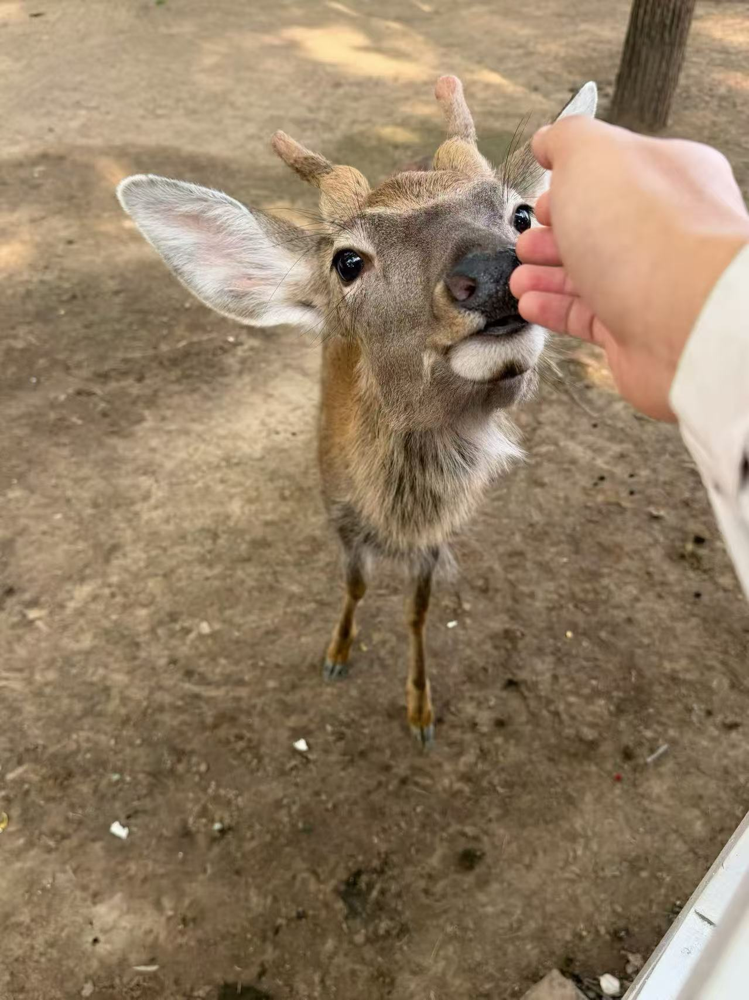
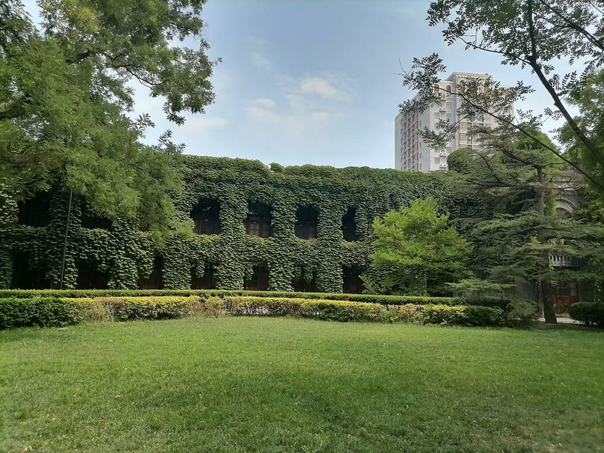

潞河中学创办于1867年，校园占地17万平方米，总建筑面积逾10万平米，一个多世纪前的建筑与格局保持完好，是北京市为数不多的、依然保持原址原貌的学校，是通州区第一个中共党支部诞生地，是北京市首批重点中学、首批示范性普通高中，首批百年学校。
返回顶部年轮是树木的沉淀，皱纹是岁月的礼物。走进潞河中学，湖光山色、翠柏参天，奇花绿草覆地、通衢曲径散落其间。郁郁葱葱的爬山虎沿着建筑檐壁层层漫开，微风拂过，仿似绿色的波纹垂直荡漾在眼前；成群结队的鸟儿，戏花弄水，碑、亭、湖、山皆留有她们的身影，待欢畅时，百鸟齐鸣，热闹非凡。在这座建校时间比北京大学还要早的园林式校园里，厚重的历史文化底蕴与浓郁的现代学府氛围萦绕在你我之间，置身其中，不由心旷神怡，乐而忘返。
下面来欣赏一些美图吧！






 返回顶部
返回顶部
| 荣誉 | |
|---|---|
| 荣誉名称 | 授予时间 |
| 首批北京市人工智能应用场景标杆学校培育名单（中小学） | 2026年1月29日 |
| 第二批中小学人工智能教育基地 | 2025年12月15日 |
| 第二批北京市智慧校园示范校 | 2024年10月 |
本来刚开始创建文件的时候非常激动，想要大写特写来着，但写到这有点累了，所以简单写两笔吧。
我小学就作为潞河附属的小学的首届学生，初中和高中都在潞河中学度过。十二年的时光，潞河几乎贯穿了我目前的人生。十二年对我来说真的很长，但对于她159年的历史来说，也许不那么起眼。在这里，知识只是最不起眼的收获，那些独有的情谊和经历塑造了我的人格。我一直怀念珍惜着那些人和事。
因此，我将我精神的故乡，潞河，作为我第一次完成的作品的主题。
如果你想了解更多关于潞河的内容，可以访问潞河官网，或者关注潞河的微信公众号“潞河中学”。
返回顶部